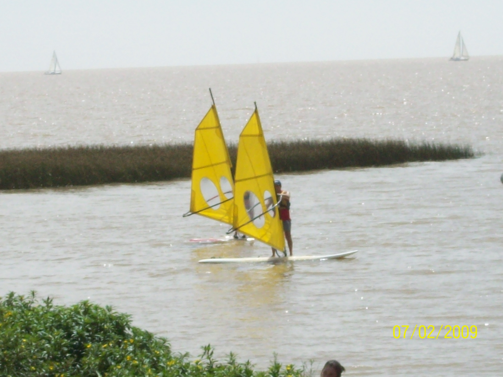
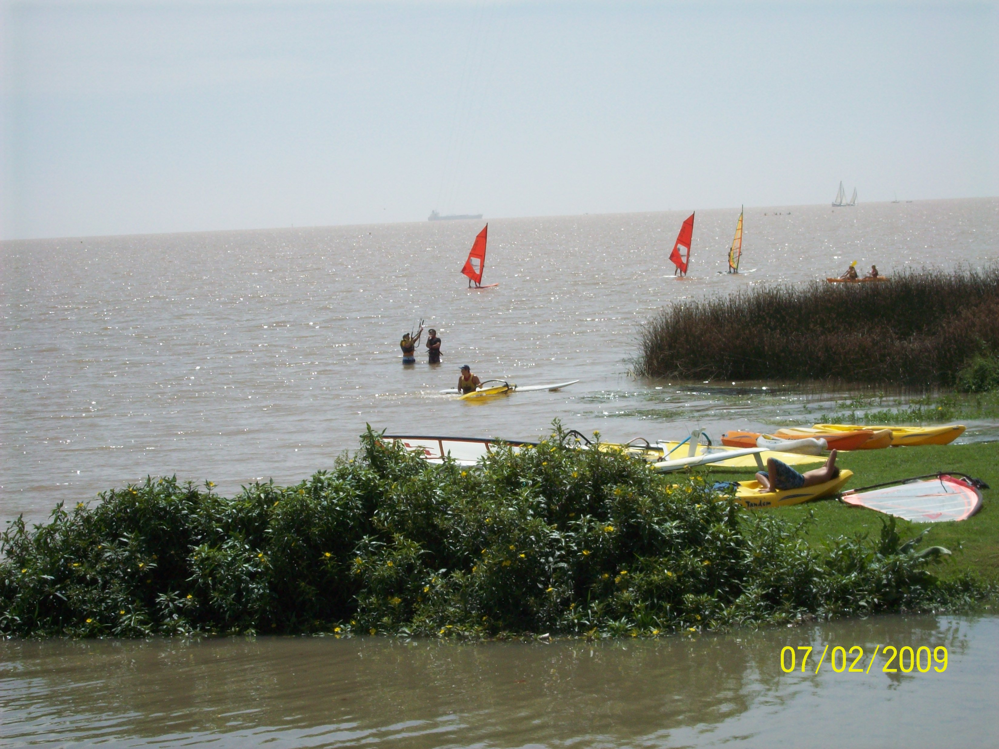

WindsurfingEncuentro en el Windsurf muchas similitudes prácticas con la vida y navegar es como una mezcla de deporte y medio de expresión artístico.Conceptos como: Aquello que puede representar una adversidad o un problema (por ejemplo la corriente, el viento, factores ambientales) pueden tambien ser utilizados para progresar y todo depende por ejemplo de:   Mas de 10 años mas tarde, retomo y aqui mi diario. Un video hecho en el Rio de la Plata el Sabado 27 de Febrero: |